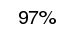
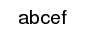
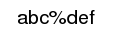

- Index
-
 ImageMagick Examples Preface and Index
ImageMagick Examples Preface and Index
-
Known and Fixed Bugs Index
Note: Drawing Percent Characters is no longer a
issue in IM, as percent '
%' escapes were
completely removed from all operators except "
-annotate"
for drawing text, and "
-label"
for "
monatge" labels. This page is for reference
for older IM users who may still have to deal with this bug.
The examples on this page have not been re-created when/if the
bug was fixed.
A Percent Problem
The percent character
'
%' presents a different problem. If you just use
it, most likely it will draw onto the image just as you would
expect.
convert -size 250x50 xc:none -box white -pointsize 20 -gravity center \
-draw 'text 0,0 " 97% "' \
-trim +repage -bordercolor white -border 5x0 draw_percent_ok.gif
|
|

|
But if you follow the percent character by certain
special characters like '
d' the percent and that
character disappears.
convert -size 250x50 xc:none -box white -pointsize 20 -gravity center \
-draw 'text 0,0 " abc%def "' \
-trim +repage -bordercolor white -border 5x0 draw_percent_bad.gif
|
|

|
The problem is that in the 'C' programming language
"
%d" is used for special purposes. so replaces the
character sequence with something else, in this case nothing.
This could probably be regarded as a
bug. The
work-a-round was to replace all drawn text percent symbols with
two such symbols, EG "
%%'.
convert -size 250x50 xc:none -box white -pointsize 20 -gravity center \
-draw 'text 0,0 " abc%%def "' \
-trim +repage -bordercolor white -border 5x0 draw_percent_fixed.gif
|
|

|
{kind=link}
{kind=link}
{kind=link}